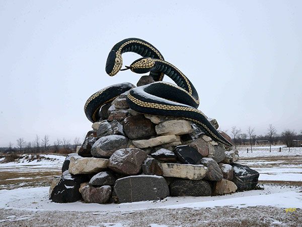
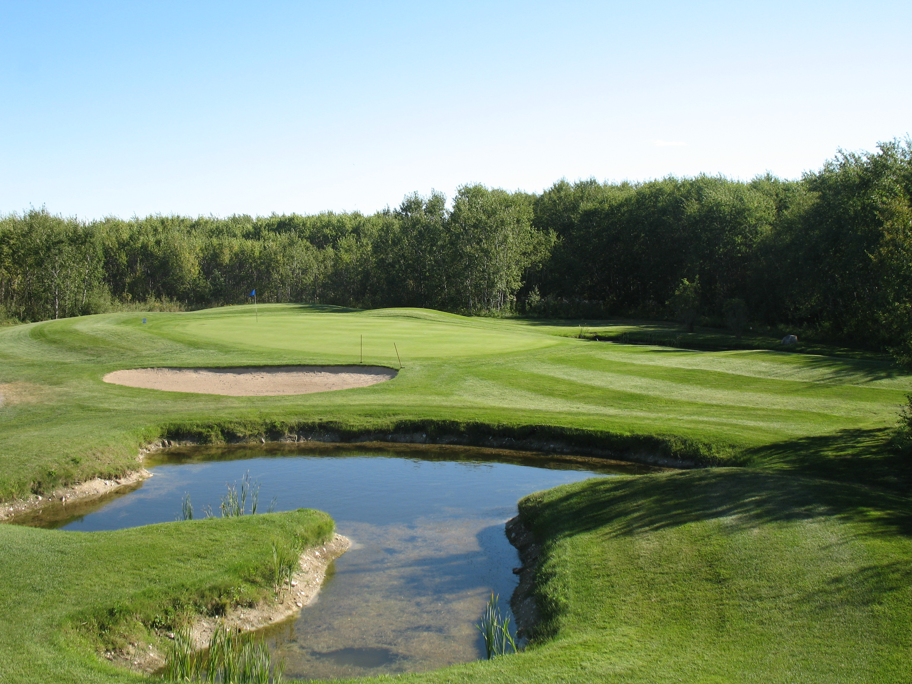
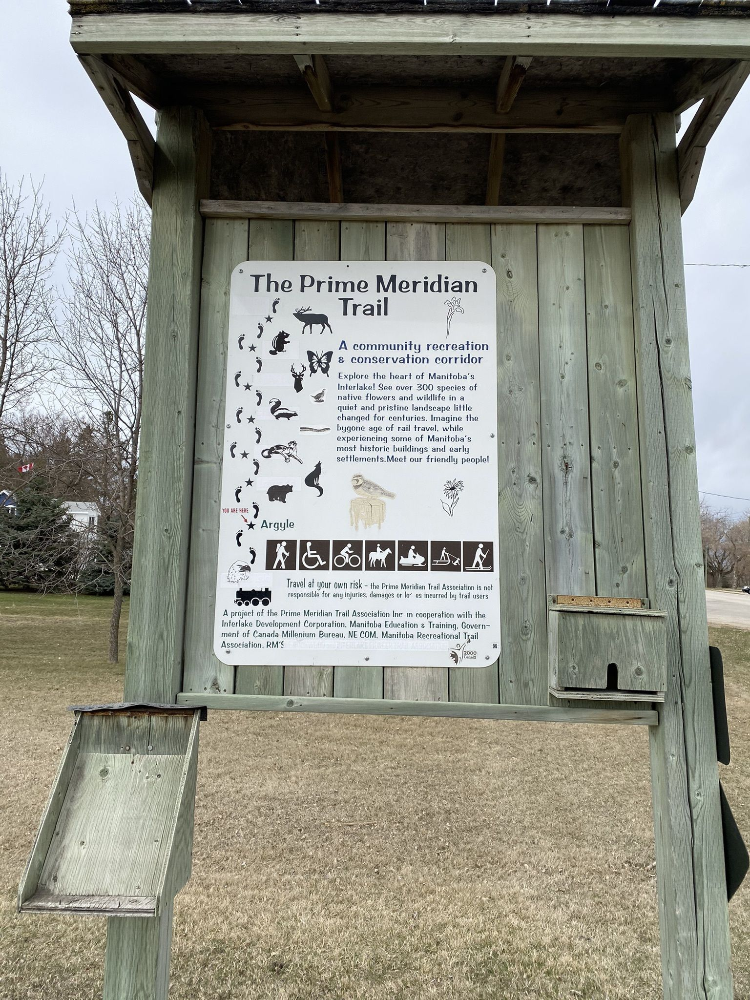

A handful of things to see in Inwood

Visit SsSam and SsSara
Sam and Sara commemorate the massive number of red-sided garter snakes that call the area their home. You can look, but please don't touch! The dens themselves are a little further up the road, where twice a year you can view the largest migration of these snakes in the world.

Inwood Golf and Country Club
Play a round or two at the Country Club. They're proud to cater toworking class people, with prices that haven't changed in over ten years. A full 18 hole course, with plenty of challenge.

Prime Meridian Hiking Trail
Inwood is only one of a handful of towns that rests along the trail. The Prime Meridian, formerly a rail line, stretches almost 120km from end to end, making it a welcome route for everyone from nature lovers to dirt bike riders.